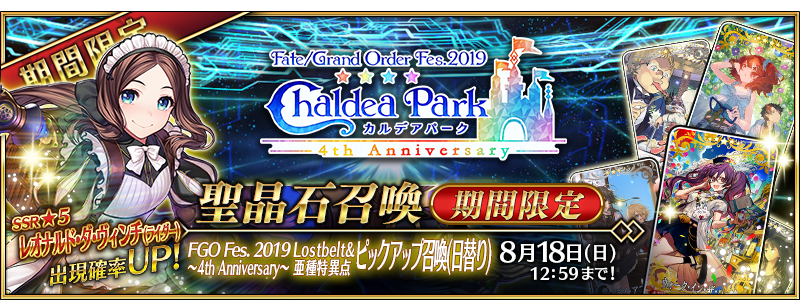
◆「FGO Fes. 2019 ～4th Anniversary～ Lostbelt＆亞種特異點Pick Up召喚(每日交替)」◆
期間:2019年8月4日(日) 18:00～8月18日(日) 11:59
期間限定「FGO Fes. 2019 ～4th Anniversary～ Lostbelt＆亞種特異點Pick Up召喚(每日交替)」分成「Lostbelt Pick Up召喚(每日交替)」與「亞種特異點Pick Up召喚(每日交替)」2種舉辦！
期間限定從者「★5(SSR)李奧納多・達文西(Rider)」與期間限定概念禮裝「★5(SSR)ウォーク・イン・ザ・パーク」「★4(SR)モーニング・グローリー」「★3(R)サンデー・ディナー」新登場！
| 「Lostbelt Pick Up召喚(每日交替)」舉辦期間 |
|---|
| 「亞種特異點Pick Up召喚(每日交替)」舉辦期間 |
|---|
※請注意「Lostbelt Pick Up召喚(每日交替)」與「亞種特異點Pick Up召喚(每日交替)」舉辦期間不同。
◆有關從者的注意◆
※「★5(SSR)李奧納多・達文西(Rider)」在Pick Up期間結束後不會追加到故事召喚。
※透過章節進行追加的一部份從者，就算未通過章節前也能入手。
※透過章節進行追加的從者在未Pick Up期間，會是抽出的對象外。
※以每日交替Pick Up的各異聞帯、亞種特異點從者在Pick Up期間結束後仍會在故事召喚被抽出。
※關於隱藏真名尚未判明的從者，透過主線關卡的進行會讓從者及一部份份寶具的名稱變化。
◆有關從者真名的注意◆
在2018年12月31日(二) 23:00以後新配信的主線故事及期間限定活動、一部份關卡、宣傳活動及召喚中，會顯示隱藏真名的對象從者真名。
※已經配信的主線故事、復刻活動、一部份關卡中不在此限。
◆有關概念禮裝的注意◆
※「★3(R)サンデー・ディナー」在Pick Up期間中，也能靠友情點數召喚獲得。
※請注意自友情點數召喚抽出的「★3(R)サンデー・ディナー」在自動變還設定登錄★3(R)概念禮裝的情況，會變成自動變還的對象。
※不包含透過章節進行追加的概念禮裝。
11次召喚中確定1張★4(SR)以上與確定1位★3(R)以上的從者！
※確定★4(SR)以上包含從者和概念禮裝。
※本頁面皆為開發中圖片。會有與實際圖片相異的情況。
◆「FGO Fes. 2019 ～4th Anniversary～ Lostbelt＆亞種特異點Pick Up召喚(每日交替)」Pick Up內容◆
本次的Pick Up中，代表第2部第1章～第3章代表的從者們與代表亞種特異點Ⅰ～Ⅳ的從者們以每日交替，「★5(SSR)李奧納多・達文西(Rider)」與期間限定概念禮裝「★5(SSR)ウォーク・イン・ザ・パーク」「★4(SR)モーニング・グローリー」「★3(R)サンデー・ディナー」常駐Pick Up！
Pick Up期間中，期間限定從者、Pick Up從者、期間限定概念禮裝的出現機率提升！
詳情請在聖晶石召喚畫面左下的召喚詳細確認。
| 每日交替 Pick Up期間 |
Lostbelt Pick Up召喚 Pick Up內容 |
亞種特異點Pick Up召喚 Pick Up內容 |
|---|---|---|
| 8/4(日) 19:00～ 8/6(二) 22:59 |
★5 李奧納多・達文西(Rider) | 舉辦期間外 |
| 8/6(二) 23:00～ 8/7(三) 22:59 |
【Lostbelt No.1 永久凍土帝國 安娜塔西亞】 ★5 李奧納多・達文西(Rider) ★5 安娜塔西亞 ★4 阿塔蘭塔〔Alter〕 ★3 阿維斯布隆 ★3 安東尼奧・薩里耶利 |
【亞種特異點Ⅰ 惡性隔絕魔境 新宿】 ★5 李奧納多・達文西(Rider) ★4 Emiya〔Alter〕 ★4 新宿的Assassin(燕青) ★4 新宿的Avenger(海森・羅伯) |
| 8/7(三) 23:00～ 8/8(四) 22:59 |
【Lostbelt No.2 無間冰焰世紀 諸神黃昏】 ★5 李奧納多・達文西(Rider) ★5 拿破崙 ★4 瓦爾基里 |
【亞種特異點Ⅱ 傳承地底世界 雅戈泰】 ★5 李奧納多・達文西(Rider) ★5 不夜城的Caster(雪赫拉莎德) ★4 不夜城的Assassin(武則天) ★4 黃金國的Berserker(彭忒西勒亞) ★3 反抗軍的Rider(克里斯多福・哥倫布) |
| 8/8(四) 23:00～ 8/9(五) 22:59 |
【Lostbelt No.2 無間冰焰世紀 諸神黃昏】 ★5 李奧納多・達文西(Rider) ★5 志度內 ★4 瓦爾基里 |
【亞種特異點Ⅲ／亞種並行世界 屍山血河舞台 下總國】 ★5 李奧納多・達文西(Rider) ★4 柳生但馬守宗矩 ★4 Archer・地獄(巴御前) ★4 Assassin・樂園(望月千代女) ★4 加藤段藏 ★3 寶藏院胤舜 |
| 8/9(五) 23:00～ 8/10(六) 22:59 |
【Lostbelt No.3 人智統合真國 SIN】 ★5 李奧納多・達文西(Rider) ★5 李書文(Assassin) ★4 蘭陵王 ★4 秦良玉 ★4 虞美人 ★3 赤兔馬 |
【亞種特異點Ⅳ 禁忌降臨庭園 塞勒姆】 ★5 李奧納多・達文西(Rider) ★4 哪吒 ★4 俄刻阿諾斯的Caster(喀耳刻) ★4 米德拉什的Caster(示巴的女王) |
| 8/10(六) 23:00～ 8/11(日) 22:59 |
【Lostbelt No.3 人智統合真國 SIN】 ★5 李奧納多・達文西(Rider) ★5 項羽 ★4 蘭陵王 ★4 秦良玉 ★4 虞美人 ★3 赤兔馬 |
舉辦期間外 |
| 8/11(日) 23:00～ 8/18(日) 11:59 |
★5 李奧納多・達文西(Rider) |
※請注意會以每日交替變更Pick Up的從者。
8月6日(二) 23:00～8月7日(三) 22:59
| Lostbelt Pick Up召喚(每日交替) |
|---|
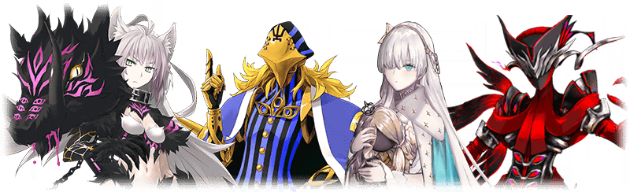
| 職階 | 稀有度 | 從者名 |
|---|---|---|
| Rider | ★★★★★ | 李奧納多・達文西 |
| Caster | ★★★★★ | 安娜塔西亞 |
| Berserker | ★★★★ | 阿塔蘭塔〔Alter〕 |
| Caster | ★★★ | 阿維斯布隆 |
| Avenger | ★★★ | 安東尼奧・薩里耶利 |
※未通過Lostbelt No.1的狀態也能進行Pick Up召喚。 ※Pick Up期間中，「★3(R)安東尼奧・薩里耶利」就算通過各章前也能入手。 ※★3(R)從者仍會被抽出。
| 亞種特異點Pick Up召喚(每日交替) |
|---|
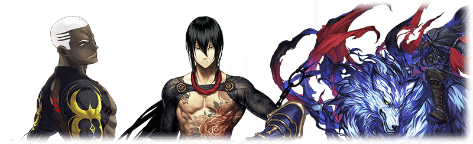
| 職階 | 稀有度 | 從者名 |
|---|---|---|
| Rider | ★★★★★ | 李奧納多・達文西 |
| Archer | ★★★★ | Emiya〔Alter〕 |
| Assassin | ★★★★ | 新宿的Assassin(燕青) |
| Avenger | ★★★★ | 新宿的Avenger(海森・羅伯) |
※未通過亞種特異點Ⅰ的狀態也能進行Pick Up召喚。 ※Pick Up期間中，「★4(SR)Emiya〔Alter〕」就算通過各章前也能入手。 ※★3(R)從者仍會被抽出。
8月7日(三) 23:00～8月8日(四) 22:59
| Lostbelt Pick Up召喚(每日交替) |
|---|
| 職階 | 稀有度 | 從者名 |
|---|---|---|
| Rider | ★★★★★ | 李奧納多・達文西 |
| Archer | ★★★★★ | 拿破崙 |
| Lancer | ★★★★ | 瓦爾基里 |
※未通過Lostbelt No.2的狀態也能進行Pick Up召喚。 ※★3(R)從者仍會被抽出。
| 亞種特異點Pick Up召喚(每日交替) |
|---|
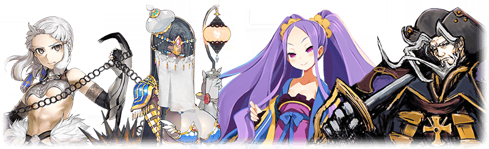
| 職階 | 稀有度 | 從者名 |
|---|---|---|
| Rider | ★★★★★ | 李奧納多・達文西 |
| Caster | ★★★★★ | 不夜城的Caster(雪赫拉莎德) |
| Assassin | ★★★★ | 不夜城的Assassin(武則天) |
| Berserker | ★★★★ | 黃金國的Berserker(彭忒西勒亞) |
| Rider | ★★★ | 反抗軍的Rider(克里斯多福・哥倫布) |
※未通過亞種特異點Ⅱ的狀態也能進行Pick Up召喚。 ※Pick Up期間中，「★3(R)反抗軍的Rider(克里斯多福・哥倫布)」就算通過各章前也能入手。 ※★3(R)從者仍會被抽出。
8月8日(四) 23:00～8月9日(五) 22:59
| Lostbelt Pick Up召喚(每日交替) |
|---|
| 職階 | 稀有度 | 從者名 |
|---|---|---|
| Rider | ★★★★★ | 李奧納多・達文西 |
| Alterego | ★★★★★ | 志度內 |
| Lancer | ★★★★ | 瓦爾基里 |
※未通過Lostbelt No.2的狀態也能進行Pick Up召喚。 ※Pick Up期間中，「★5(SSR)志度內」就算通過各章前也能入手。 ※★3(R)從者仍會被抽出。
| 亞種特異點Pick Up召喚(每日交替) |
|---|
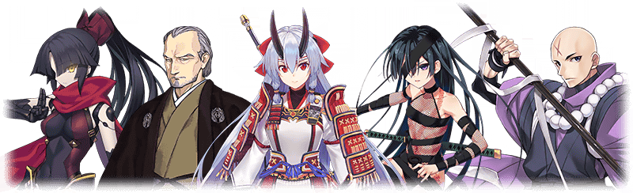
| 職階 | 稀有度 | 從者名 |
|---|---|---|
| Rider | ★★★★★ | 李奧納多・達文西 |
| Saber | ★★★★ | 柳生但馬守宗矩 |
| Archer | ★★★★ | Archer・地獄(巴御前) |
| Assassin | ★★★★ | Assassin・樂園(望月千代女) |
| ★★★★ | 加藤段藏 | |
| Lancer | ★★★ | 寶藏院胤舜 |
※未通過亞種特異點Ⅲ／亞種平行世界的狀態也能進行Pick Up召喚。 ※Pick Up期間中，「★4(SR)柳生但馬守宗矩」、「★4(SR)加藤段藏」就算通過各章前也能入手。 ※★3(R)從者仍會被抽出。
8月9日(五) 23:00～8月10日(六) 22:59
| Lostbelt Pick Up召喚(每日交替) |
|---|
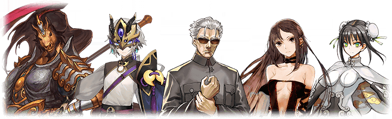
| 職階 | 稀有度 | 從者名 |
|---|---|---|
| Rider | ★★★★★ | 李奧納多・達文西 |
| Assassin | ★★★★★ | 李書文 |
| Saber | ★★★★ | 蘭陵王 |
| Lancer | ★★★★ | 秦良玉 |
| Assassin | ★★★★ | 虞美人 |
| Rider | ★★★ | 赤兔馬 |
※未通過Lostbelt No.3的狀態也能進行Pick Up召喚。 ※Pick Up期間中，「★5(SSR)李書文(Assassin)」、「★4(SR)虞美人」、「★3(R)赤兔馬」就算通過各章前也能入手。 ※★3(R)從者仍會被抽出。
| 亞種特異點Pick Up召喚(每日交替) |
|---|
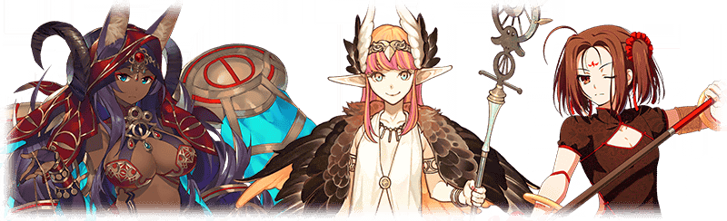
| 職階 | 稀有度 | 從者名 |
|---|---|---|
| Rider | ★★★★★ | 李奧納多・達文西 |
| Lancer | ★★★★ | 哪吒 |
| Caster | ★★★★ | 俄刻阿諾斯的Caster(喀耳刻) |
| ★★★★ | 米德拉什的Caster(示巴的女王) |
※未通過亞種特異點Ⅳ的狀態也能進行Pick Up召喚。 ※Pick Up期間中，「★4(SR)米德拉什的Caster(示巴的女王)」就算通過各章前也能入手。 ※★3(R)從者仍會被抽出。
8月10日(六) 23:00～8月11日(日) 22:59
| Lostbelt Pick Up召喚(每日交替) |
|---|
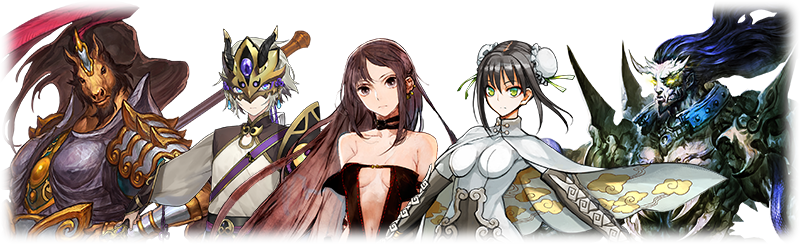
| 職階 | 稀有度 | 從者名 |
|---|---|---|
| Rider | ★★★★★ | 李奧納多・達文西 |
| Berserker | ★★★★★ | 項羽 |
| Saber | ★★★★ | 蘭陵王 |
| Lancer | ★★★★ | 秦良玉 |
| Assassin | ★★★★ | 虞美人 |
| Rider | ★★★ | 赤兔馬 |
※未通過Lostbelt No.3的狀態也能進行Pick Up召喚。 ※Pick Up期間中，「★4(SR)虞美人」、「★3(R)赤兔馬」就算通過各章前也能入手。 ※★3(R)從者仍會被抽出。
|
|
★★★★★SSR |

| 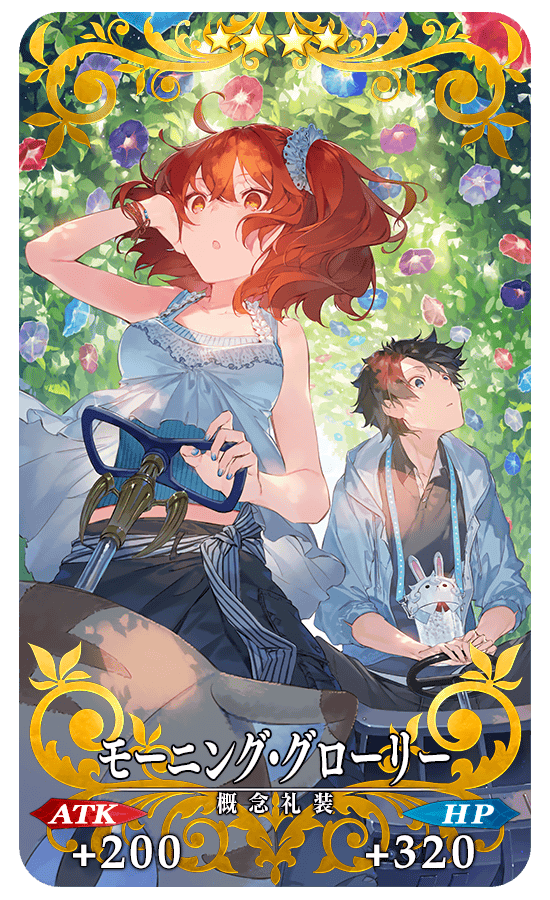 |
★★★★SR |
 |
★★★R |
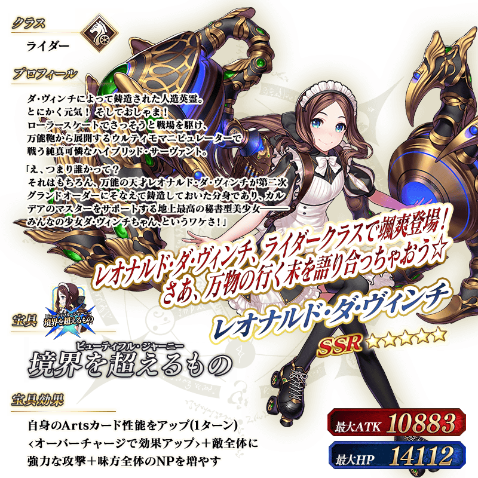
※上述「★5(SSR)李奧納多・達文西(Rider)」的立繪為靈基再臨第2階段。
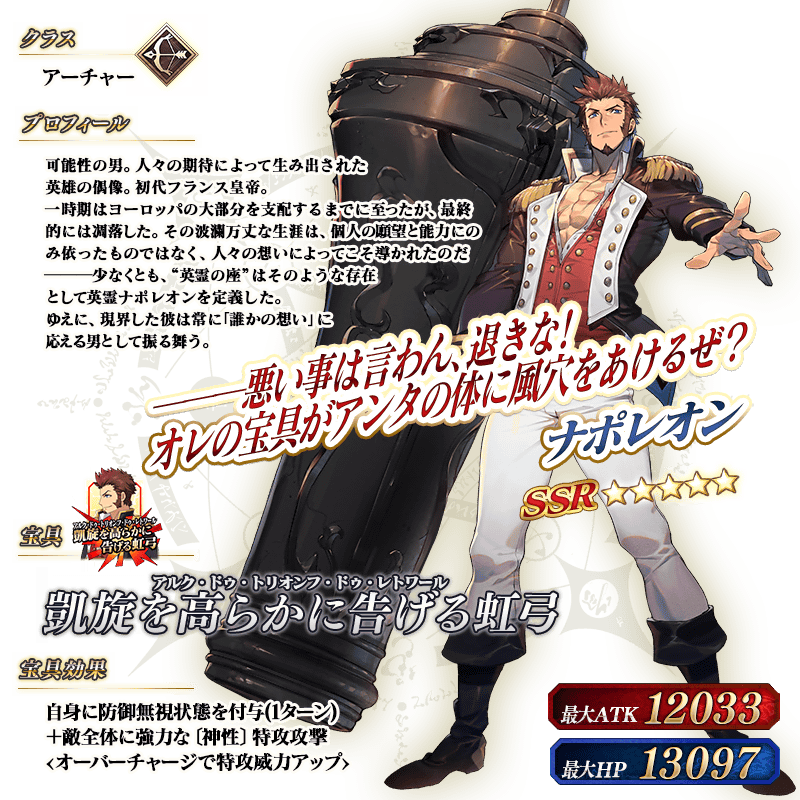


 ※上述「★5(SSR)李書文(Assassin)」的立繪為靈基再臨第2階段。
※上述「★5(SSR)李書文(Assassin)」的立繪為靈基再臨第2階段。
 ※上述「★5(SSR)項羽」的立繪為靈基再臨第2階段。
※上述「★5(SSR)項羽」的立繪為靈基再臨第2階段。

 ※上述「★5(SSR)志度內」的立繪為靈基再臨第2階段。
※上述「★5(SSR)志度內」的立繪為靈基再臨第2階段。
介紹「★5(SSR)李奧納多・達文西(Rider)」的寶具演出！
在「Fate/Grand Order」官方網站內的公告中，以影片公開寶具演出，敬請確認。
介紹「★5(SSR)拿破崙」「★5(SSR)安娜塔西亞」「★5(SSR)不夜城的Caster(雪赫拉莎德)」「★5(SSR)李書文(Assassin)」「★5(SSR)項羽」「★5(SSR)志度內」的寶具演出！
在「Fate/Grand Order」官方網站內的公告中，以影片公開寶具演出，敬請確認。
其他還有，「Fate/Grand Order Fes. 2019 ～4th Anniversary～」和期間限定「FGO Fes. 2019 ～4th Anniversary～ 福袋召喚」同時舉辦！
關於詳情，請自下述橫幅確認。
■「Fate/Grand Order Fes. 2019 ～4th Anniversary～」詳細情報

■「FGO Fes. 2019 ～4th Anniversary～ 福袋召喚」詳細情報
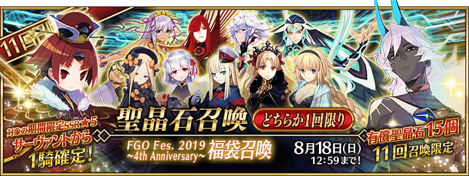